Lab8_State_Machines
Lab Overview
This lab aims to implement a state machine that acts as a lock. The requirements of this The lab consists of understanding the design requirements for implementing the Verilog design.
Background
State machines are very useful tools in any computer system. They make it easy to visualize and solve all kinds of problems. A state machine is a device that keeps track of the state of something. That state can change due to changes to input values or through some pre-determined sequence. A common example might be a traffic signal at an intersection. The state describes how the lights at the intersection may be lit at a given time. The status will change regularly after fixed time intervals for simple timed lights. The same lights could be made more intelligent by incorporating sensor inputs that detect whether cars are waiting, causing the state to change differently. That might be from a radar detector or magnetic coil in the road. Additional lights could incorporate a pedestrian crossing, so a pedestrian crosswalk request button could be another input.
Every state machine must have some initial state to ensure everything begins properly and a reset signal to return to that initialization. There are two main categories of state machines, Moore and Mealy. A Moore machine is a state machine whose output values are determined only by its current state. A Mealy machine is defined as a state machine whose output values are determined by its current state and current inputs.
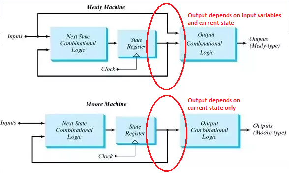
Part I(Design Requirements)
You must design a Moore state machine that controls a digital lock. Your lock should have three inputs: a reset, a submit (clock) bit, and a decimal digit (4-bit) input. The decimal digit input will encode the decimal digits 0-9 in the standard unsigned binary encoding. You will input 3-digit codes by setting the decimal digit input to a number and activating the submit bit three times in a row. To unlock your device, it should receive three correct digits. In addition, there will be three Tamper Freeze sequences, which will freeze the device until a reset signal is received. You can use these sequences:
Correct sequence: “642”
Tamper Freeze sequence: “641”; “652”; “643”
Your digital lock will have three outputs: a Locked bit, a Ready bit, and a Tamper bit. The Locked bit and Ready bits should initially be on. After you input your first digit, the Ready bit should turn off. If the correct input sequence is observed, the Locked bit should turn off and remain off until the lock is reset. No further inputs should affect the device. If one of the Tamper Freeze sequences is observed, the Tamper bit should be turned on and remain on until the reset is activated. No further inputs should affect the device. If any other input is observed, the device should return to the ready state by activating the Ready bit and waiting to accept the next 3-digit input.
You can also understand the process by the table below:
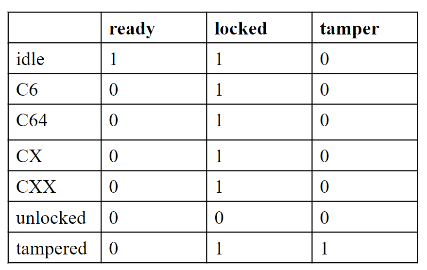
Add the source file
digital_lock.v
module digital_lock(
input clk, // Clock input
input submit, // Submit button used to submit the current digit
input reset, // Reset input to return the lock to its initial state
input [2:0] dint, // 3-bit digital input representing the entered code
output reg locked, // Indicates whether the lock is currently locked
output reg ready, // Indicates whether the system is ready to receive input
output reg tamper, // Indicates a tampering attempt
output reg [2:0] led // LED outputs reflecting the current input
);
// State definitions for the finite state machine (FSM)
reg [3:0] state; // Current state of the lock
localparam idle = 4'd0, // Idle state waiting for input
C_6 = 4'd1, // State indicating the first digit (6) has been entered correctly
C_64 = 4'd2, // State indicating the first two digits (6,4) have been entered correctly
C_65 = 4'd3, // Unused state. You might want to remove or update this comment
C_X = 4'd4, // State for an incorrect initial digit
C_XX = 4'd5, // State for an incorrect sequence after the first digit
unlocked = 4'd6, // State where the lock is unlocked
tampered = 4'd7; // State indicating a tampering attempt
// The next state logic variable
reg [3:0] next_state;
// Sequential logic for state transitions
always @(posedge submit or negedge reset)
begin
if(!reset)
state <= idle; // Reset to initial state
else
state <= next_state; // Move to the next state on the submit press
end
// Combinational logic for state transitions and output controls
always @(*)
begin
// Default actions for each state
ready = 1'b1;
locked = 1'b1;
tamper = 1'b0;
next_state = idle; // By default, return to idle unless a condition below is met
case(state)
idle:
begin
// In idle state, the system is ready and locked. Awaiting correct input
if(dint == 3'b110)
next_state = C_6; // Correct first digit
else
next_state = C_X; // Incorrect first digit
end
C_6:
begin
//The first digit was correct, ready for the second
ready = 1'b0; // System not ready for new input until next submit
if(dint == 3'b100)
next_state = C_64; // Correct second digit
else
next_state = C_XX; // Incorrect second digit
end
C_64:
begin
// First two digits correct; decide on the final digit
if(dint == 3'b010)
next_state = unlocked; // Unlock if correct final digit
else if(dint == 3'b001)
next_state = tampered; // Tamper detected
end
// Other states follow a similar pattern
C_X:
begin
// For other incorrect data
ready = 1'b0;
tamper = 1'b0;
locked = 1'b1;
next_state = C_XX;
end
C_XX:
begin
ready = 1'b0;
tamper = 1'b0;
locked = 1'b1;
next_state = idle;
end
unlocked:
begin
// Lock is unlocked. Stay in this state until reset
ready = 1'b0;
locked = 1'b0; // Lock remains unlocked
next_state = unlocked; // Stay in this state
end
tampered:
begin
// Tampering detected, lock remains locked and indicates tampering
ready = 1'b0;
tamper = 1'b1;
next_state = tampered; // Stay in this state
end
default:
begin
ready = 1'd1;
tamper = 1'd0;
locked = 1'd1;
next_state = idle;
end
endcase
// Reflect input digits on LEDs
led = dint;
end
endmodule
tb_2
module tb_2();
reg clk;
reg submit;
reg reset;
reg [2:0] dint; // Input digit to the lock
wire locked; // Indicates if the lock is in a locked state
wire ready; // Indicates if the lock is ready for new input
wire tamper; // Indicates if a tampering attempt has been detected
wire [2:0] led; // Shows the current digit input through LEDs
digital_lock test(
.clk(clk),
.submit(submit),
.reset(reset),
.dint(dint),
.locked(locked),
.ready(ready),
.tamper(tamper),
.led(led));
// Initial block for test sequence
initial begin
clk <= 0; // Initialize the clock
submit <= 0; // Initialize the submit button as not pressed
reset <= 0; // Start with the lock in the reset state
dint <= 0; // Initialize the input digit
#20; // Wait for 20ns
reset <= 1; // Release the reset to start the lock operation
#20; // Wait for 20ns
// First input sequence: 6-2-1
dint <= 3'b110; // Set digit to 6
#20;
submit <= 1; // Submit the digit
#20;
submit <= 0; // Release the submit button
dint <= 3'b010; // Set digit to 2
#20;
submit <= 1; // Submit the digit
#20;
submit <= 0; // Release the submit button
dint <= 3'b001; // Set digit to 1
#20;
submit <= 1; // Submit the digit
#20;
submit <= 0; // Release the submit button
#20;
// input 6-4-2
dint <= 6;
#20;
submit <= 1;
#20;
submit <= 0;
dint <= 4;
#20
submit <= 1;
#20;
submit <= 0;
dint <= 2;
#20
submit <= 1;
#20;
submit <= 0;
#20;
// input 6-4-2
dint <= 6;
#20;
submit <= 1;
#20;
submit <= 0;
dint <= 4;
#20
submit <= 1;
#20;
submit <= 0;
dint <= 2;
#20
submit <= 1;
#20;
submit <= 0;
#20;
// reset
reset <= 0;
#20;
reset <= 1;
#20;
// input 6-4-1
dint <= 6;
#20;
submit <= 1;
#20;
submit <= 0;
dint <= 4;
#20
submit <= 1;
#20;
submit <= 0;
dint <= 1;
#20
submit <= 1;
#20;
submit <= 0;
#20;
// input 6-4-1
dint <= 6;
#20;
submit <= 1;
#20;
submit <= 0;
dint <= 4;
#20
submit <= 1;
#20;
submit <= 0;
dint <= 1;
#20
submit <= 1;
#20;
submit <= 0;
#20;
// reset
reset <= 0;
#20;
reset <= 1;
#20;
end
always #10 clk = ~clk;
endmodule
Considering that the button press is at a high level, it is necessary to debounce the button to ensure the stability of the data.
btn_digit.v
// Module for processing button inputs and interfacing with a digital lock system
module btn_digit (
input clk, // Clock input
input rst, // Reset input
input key, // Button input from the user
input [2:0] dint, // 3-bit digital input representing a numerical value
output locked, // Indicates whether the lock is currently locked
output ready, // Indicates whether the system is ready to receive input
output tamper, // Indicates a tampering attempt
output [2:0] led // LED outputs reflecting the current input or state
);
// Intermediate signals and registers
wire key_pulse; // Pulse generated when a key press is detected
reg [7:0] key_buffer; // Buffer to hold the state of the key press
reg key_reg; // Register to hold the immediate state of the key
// Synchronize the key press to the system clock and reset
always @(posedge clk or negedge rst)
begin
if (!rst)
key_reg <= 1'd0; // Clear the key register on reset
else
begin
if (key == 1'd1)
key_reg <= 1'd1; // Set key register if the key is pressed
else
key_reg <= 1'd0; // Clear key register if the key is not pressed
end
end
// Buffer the key press status for each bit, synchronizing with the system clock
integer i; // Loop variable
always @(posedge clk or negedge rst)
begin
if (!rst)
key_buffer <= 8'd0; // Reset the key buffer
else
begin
for (i = 0; i < 8; i = i + 1)
begin
if (key_reg == 1'd1)
key_buffer[i] = 1'd1; // Set each bit if key is pressed
else
key_buffer[i] = 1'd0; // Clear each bit if key is not pressed
end
end
end
// Generate a key pulse signal when all bits in the buffer are set
assign key_pulse = key_buffer & 8'hFF; // Produces a pulse when all bits of key_buffer are high
// Instantiate the digital_lock module, passing the necessary signals
digital_lock dut(
.dint(dint), // Pass the digit input
.reset(rst), // Pass the reset signal
.submit(key_pulse), // Use the generated key pulse as the submit signal
.locked(locked), // Connect the locked status output
.tamper(tamper), // Connect the tamper status output
.ready(ready), // Connect the ready status output
.led(led) // Connect the LED output
);
endmodule
We can run a Simulation to check the code by clicking the Run Simulation under SIMULATION and choose the first Run Behavioral Simulation.
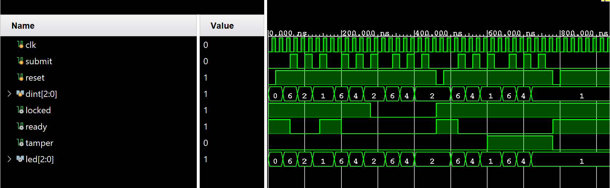
Add constraints code: lab2.xdc.
# PYNQ Pin Assignments
############################
# On-board Slide Buttons #
############################
set_property PACKAGE_PIN N16 [get_ports {led_0[2]}]
set_property PACKAGE_PIN P14 [get_ports {led_0[1]}]
set_property PACKAGE_PIN R14 [get_ports {led_0[0]}]
set_property IOSTANDARD LVCMOS33 [get_ports {led_0[2]}]
set_property IOSTANDARD LVCMOS33 [get_ports {led_0[1]}]
set_property IOSTANDARD LVCMOS33 [get_ports {led_0[0]}]
set_property PACKAGE_PIN G14 [get_ports locked_0]
set_property PACKAGE_PIN M14 [get_ports ready_0]
set_property PACKAGE_PIN L15 [get_ports tamper_0]
set_property IOSTANDARD LVCMOS33 [get_ports locked_0]
set_property IOSTANDARD LVCMOS33 [get_ports ready_0]
set_property IOSTANDARD LVCMOS33 [get_ports tamper_0]
set_property PACKAGE_PIN L19 [get_ports submit_0]
set_property IOSTANDARD LVCMOS33 [get_ports submit_0]
Implementation
The part can reference the Generate Bitstream in lab1.
The block design is shown below:
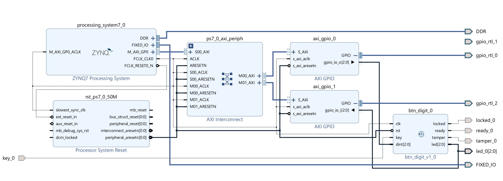
Here, we use the AXI_GPIO IP, write the number to the dint as input and read the value of the LEDs as the display.
Download the bitstream file to PYNQ
We need to download the design_1_wrapper.bit to the local machine. Go to Lab8/project_1/project_1.runs/impl_1, download design_1_wrapper.bit, and upload the file to the PYNQ. And we also need to upload the design_1.hwh file which is in the Lab8/project_1/project_1.gen/sources_1/bd/design_1/hw_handoff.
from pynq import Overlay
from pynq import Bitstream
bit = Bitstream("design_1.bit")
bit.download()
bit.bitfile_name
When download the file on the board, you will see:
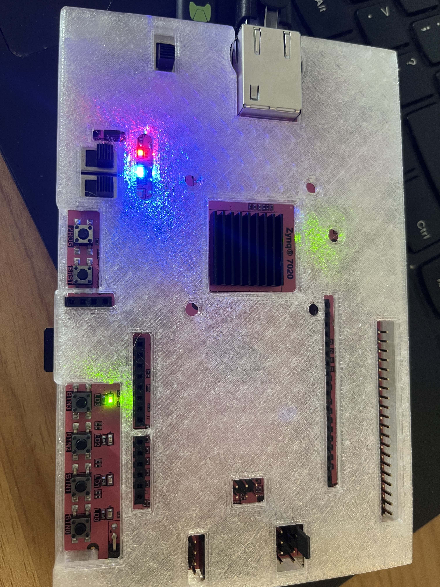
# Import the MMIO class from the PYNQ library. MMIO allows for memory-mapped I/O operations
# from Python, enabling interaction with hardware registers on FPGA.
from pynq import MMIO
# Define the base address and range for the GPIO block designated for writing operations.
# This is typically set in the hardware design and must match that configuration.
GPIO_BASE_ADDRESS = 0X41200000 # Base address for the GPIO used for writing
GPIO_RANGE = 0x1000 # Address range covered by this GPIO
# Initialize an MMIO instance for writing, allowing the Python code to interact
# with the GPIO hardware mapped at the specified base address.
gpio_write = MMIO(GPIO_BASE_ADDRESS, GPIO_RANGE)
# Define the base address for the GPIO block designated for reading operations.
# This should also match the configuration specified in the hardware design.
GPIO_BASE_ADDRESS_r = 0X41210000 # Base address for the GPIO used for reading
# Note: This should likely be `GPIO_BASE_ADDRESS_r` based on context.
# Initialize an MMIO instance for reading.
gpio_read = MMIO(GPIO_BASE_ADDRESS_r, GPIO_RANGE) # Should be GPIO_BASE_ADDRESS_r for the reading block
# Read the current state of the GPIO designated for reading. The `read` method
# accesses a specific offset within the mapped range; in this case, it reads
# from the base address of the GPIO (offset 0x0).
state = gpio_read.read(0x0) # Read from the offset 0 of the GPIO block used for reading
representations = {
'0': ('###', '# #', '# #', '# #', '###'),
'1': (' #', ' #', ' #', ' #', ' #'),
'2': ('###', ' #', '###', '# ', '###'),
'3': ('###', ' #', '###', ' #', '###'),
'4': ('# #', '# #', '###', ' #', ' #'),
'5': ('###', '# ', '###', ' #', '###'),
'6': ('###', '# ', '###', '# #', '###'),
'7': ('###', ' #', ' #', ' #', ' #'),
'8': ('###', '# #', '###', '# #', '###'),
'9': ('###', '# #', '###', ' #', '###'),
'.': (' ', ' ', ' ', ' ', ' #'),
}
def seven_segment(number):
# treat the number as a string since that makes it easier to deal with
# on a digit-by-digit basis
digits = [representations[digit] for digit in str(number)]
# Now digits is a list of 5-tuples, each representing a digit in the given number
# We'll print the first lines of each digit, the second lines of each digit, etc.
for i in range(5):
print(" ".join(segment[i] for segment in digits))
# Define the offset within the GPIO space where data will be written. Often, '0x0' is the offset for the output data register.
DATA_OFFSET = 0X0 # Offset for the data register in the GPIO space
# Define the data value to be written to the GPIO. For example, '0x6' could represent a specific pattern of bits to turn on LEDs.
DATA = 0X6 # Data to be written to the GPIO register
# Write the data to the GPIO device. This operation changes the state of GPIO pins configured as outputs.
gpio_write.write(DATA_OFFSET, DATA) # Write the data to the register at the specified offset
When writing 6 to the input, see the board below:
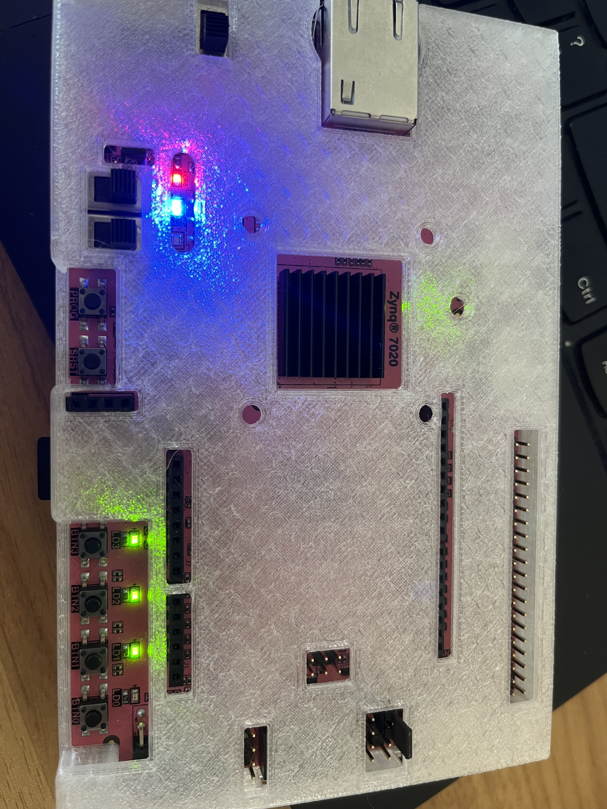
The blue LED is on, showing it’s locked.
And then you need to press the submit button like below:
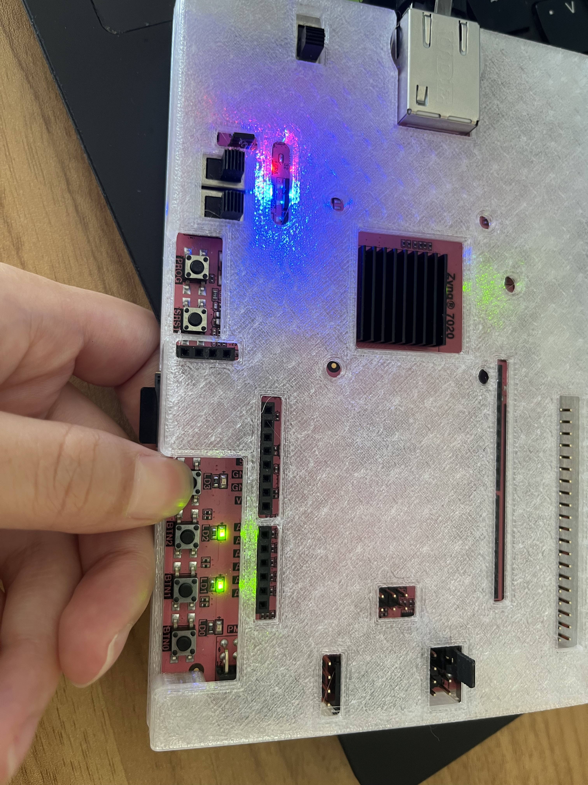
When entering the first data, the ready LED is off.
# Read the current state from the GPIO device. This involves accessing the memory-mapped I/O region
state=gpio_read.read(0x0)
seven_segment(state)
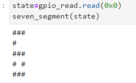
DATA = 0X4
gpio_write.write(DATA_OFFSET,DATA)
When writing 4 to the input, see the board below:
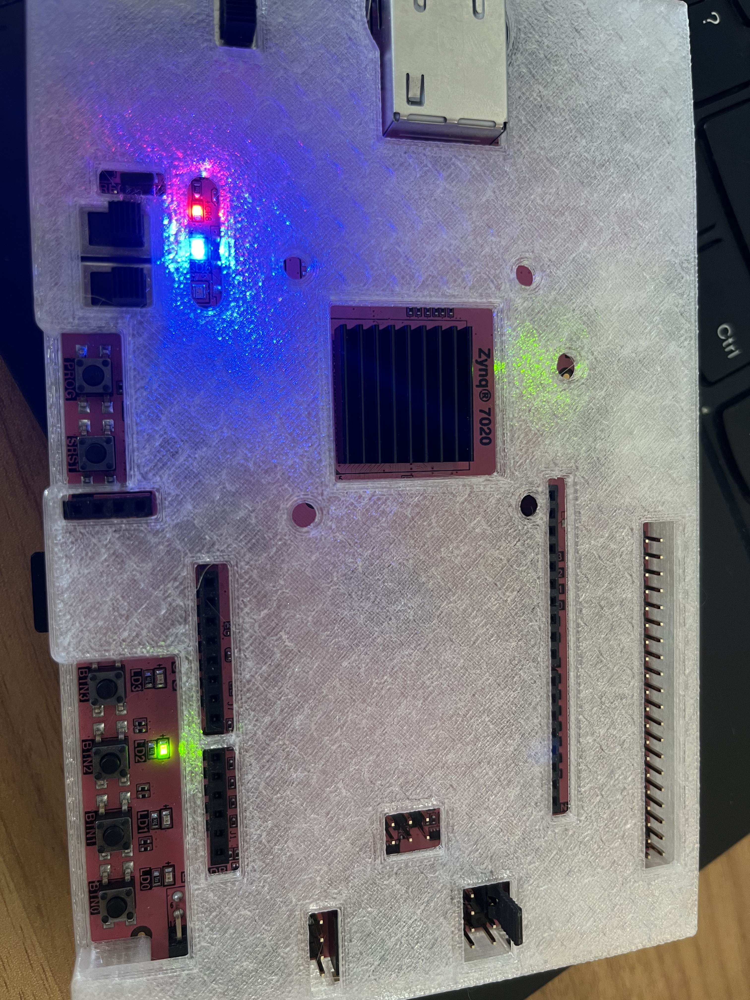
Then, you need to press the submit button.
# Read the current state from the GPIO device. This involves accessing the memory-mapped I/O region
state=gpio_read.read(0x0)
seven_segment(state)
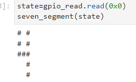
DATA = 0X2
gpio_write.write(DATA_OFFSET,DATA)
And then you need to press the submit button like below:
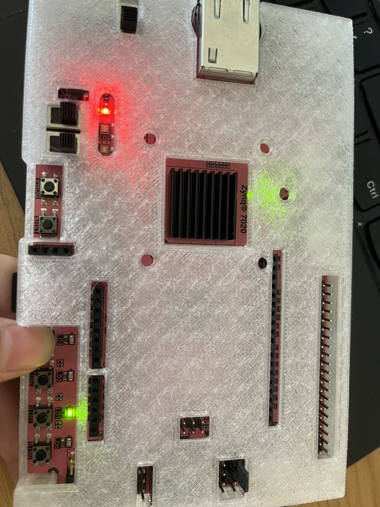
It’s unlocked, and the blue LED is off because we input the right code number
# Read the current state from the GPIO device. This involves accessing the memory-mapped I/O region
state=gpio_read.read(0x0)
seven_segment(state)
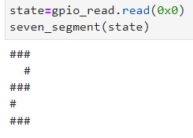